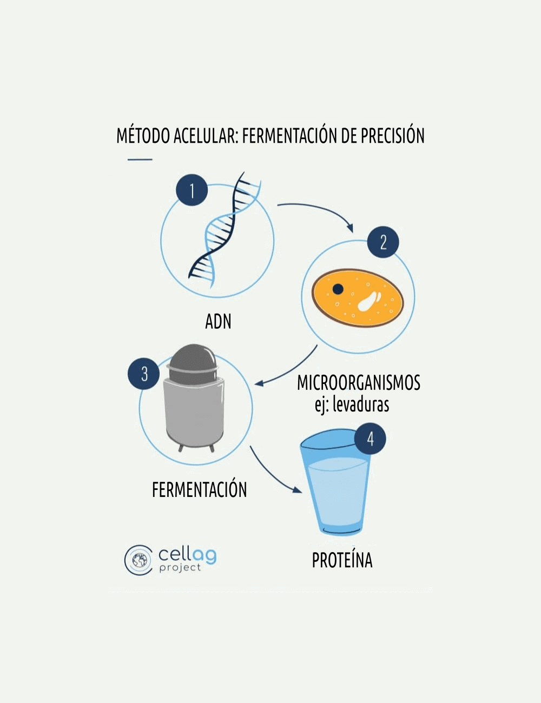

UPSIDE Chicken
Pollo cultivado con ingredientes vegetales, servido en algunos restaurantes de California.
English | Italiano | Français | Español | Deutsch | 中文 | 日本語 | Bahasa Indonesia | Português | Русский
La fermentación de precisión permite la producción de proteínas lácteas y de huevo y otros ingredientes mediante microorganismos, como levaduras u hongos, sin usar animales
Al igual que la carne cultivada y la de origen vegetal, la proteína derivada de la fermentación es mejor para el planeta, las personas y los animales
La fermentación de precisión puede reducir nuestra dependencia de la ganadería lechera industrial, así como su impacto en el clima, el medio ambiente y los animales.

Las proteínas resultantes son idénticas a las proteínas animales producidas convencionalmente y pueden utilizarse para fabricar una amplia gama de productos (queso, helado, leche, mantequilla, proteína en polvo, albumina etc)
El uso de cepas microbianas modificadas genéticamente no es nuevo, se usa desde hace varias décadas en el campo de la medicina y la alimentación para producir:
Además, existen numerosos alimentos fermentados tradicionales:
Tempeh, cerveza, yogur, kimchi, chucrut y muchos otros

"La segunda domesticación"
Primero domesticamos macroorganismos (animales y plantas), y ahora empezamos a domesticar microorganismos.
Evolucionar desde la crianza de organismos multicelulares hacia la crianza de organismos unicelulares,
nos permite hacer más con menos.
La agricultura animal industrial es la principal causa de cambio climático: Emite entre un 14% y un 51% de las emisiones de gases de efecto invernadero, más que todo el sector del transporte
La agricultura animal industrial es además la mayor responsable de los problemas medioambientales más urgentes:

Se requieren 9 calorías para alimentar a una gallina, para obtener 1 caloría de carne
Es decir, 9 veces más terreno, 9 veces más agua, 9 veces más recursos por caloría que la proteína vegetal. Con la carne de cerdo y de vaca, el despilfarro de recursos es incluso peor
El 77% del terreno agrícola se utiliza para alimentar animales para producir carne, pero dicha carne sólo aporta el 30% de la proteína y el 18% de las calorías que comen las personas
La agricultura animal consume el 29% del agua agrícola y contamina las reservas subterráneas de agua con purines
Se espera que para 2050 la demanda de carne se doble. Es imposible alimentar a la creciente población mundial con proteína de origen animal con 1 sólo planeta

El 70% de los antibióticos se usa en animales de granja
El 75% de las enfermedades contagiosas son de origen zoonótico
La próxima pandemia probablemente será originada por la explotación animal, al igual que el Covid-19

Los lácteos y otros productos de fermentación de precisión no contienen:

Cada año, se matan a 75.000 millones de animales de granja (gallinas, cerdos, vacas, etc) y 2.7 trillones de animales marinos, para producir carne, lácteos, pescado y huevos
Éstas son las 4 principales tecnologías que definirán el futuro de la producción de comida:
Basada en microorganismos, permite producir proteínas y otros ingredientes (grasas, colorantes, etc) usando levaduras y hongos

Basada en micelio de hongos, permite producir micoproteínas de alto valor nutritivo en poco tiempo. Ejemplo: Quorn

Basada en células, permite producir carne y pescado bioidéntico al equivalente animal, usando células animales que se reproducen en un biorreactor

Proteína completa y natural, producida por microorganismos no modificados, alimentados con agua y aire (hidrógeno, oxígeno, nitrógeno, carbono)
"La mayor disrupción del sistema alimentario desde la invención de la agricultura"
Los productos incluyen alimentos elaborados con células cultivadas, fermentación de precisión o fermentación de biomasa.
Pollo cultivado con ingredientes vegetales, servido en algunos restaurantes de California.

Bebida con proteína de suero sin animales producida por fermentación de precisión.

Hamburguesa vegetal que contiene hemo producido por fermentación de precisión.

Preparados para bebidas con proteína de clara de huevo producida por fermentación de precisión.


Codorniz cultivada servida en algunos restaurantes de Singapur y Australia.
Proteína vegetal completa, hecha con micelio de hongos y fermentación de biomasa


Conoce el papel emergente de la fermentación microbiana en la creación de la próxima generación de productos proteicos alternativos
Nota: Para activar los subtítulos en Español, clica en el icono de configuración, luego en "Subtitles/CC", "Auto-translate", y selecciona "Spanish"
En el primer semestre de 2026, la fermentación de precisión captó 100 millones de €, más que los 97 millones de todo 2025. La carne cultivada captó 18 millones, incluidos alimentos para animales. Fuentes: gfieurope.org, gfieurope.org
Inversión privada captada por empresas europeas (millones de €). 2026 comprende solo enero–junio; los totales anuales y semestrales no son directamente comparables.
Entre 2020 y 2025, entidades europeas destinaron 1.300 millones de € a investigar proteínas alternativas: el 29% a fermentación y el 9% a carne y pescado cultivados. Los Países Bajos concedieron 60 millones de € a un programa para ambas tecnologías. Fuentes: gfieurope.org, cellulaireagricultuur.nl
Danone y sus socios inauguraron en 2026 en Francia una instalación compartida para ampliar la fermentación, con más de 20 millones de € de inversión. Bel y Standing Ovation anunciaron producción de caseína a escala industrial; Danone Ventures se unió a Bel en su financiación de 30 millones de €. Fuentes: danone.com, groupe-bel.com, standing-ovation.co
Vivici, respaldada por Fonterra, captó 32,5 millones de € en 2025 y recibió 12,5 millones de financiación europea en 2026. Su futuro socio de producción en Estados Unidos aún necesitaba fondos para abrir en octubre de 2026. Fuentes: invest-nl.nl, agfundernews.com, agfundernews.com
La cárnica JBS anunció un plan de 100 millones de dólares que incluye la española BioTech Foods, una fábrica y un centro de investigación en Brasil. El centro abrió en 2026; no se ha confirmado si la fábrica española está operativa. Believer Meats, respaldada por Tyson, completó una instalación pero después cesó sus operaciones. Fuentes: api.mziq.com, cnnbrasil.com.br, ag.ingredion.com
China incluyó la carne cultivada y tecnologías relacionadas en su plan de investigación agrícola 2021–2025. Según la FAO, China representó el 36% del consumo aparente mundial de alimentos de origen animal acuático en 2021. Una estimación publicada en 2021 situó el consumo de China en el 28% de la carne mundial. TIME. Fuentes: nyncj.cngy.gov.cn, digitallibrary.un.org
Informes de 2026 sobre los avances de 2025. Los informes y seminarios están en inglés.
La fermentación de precisión y la carne cultivada tienen potencial para abordar problemas de la producción de alimentos, pero se necesita más inversión para avanzar en la investigación, reducir costes y ampliar la producción.
Los gobiernos pueden ayudar financiando investigación de acceso abierto, apoyando a las empresas emergentes y creando instalaciones compartidas que faciliten la llegada de nuevos productos al mercado. Compartir conocimientos y fomentar la colaboración puede ayudar a más investigadores y empresas a progresar.
También son esenciales unas normas claras y basadas en la ciencia que garanticen la seguridad alimentaria y ofrezcan a los innovadores una vía predecible para llegar al mercado.
Las proteínas alternativas podrían ayudar a abordar varios retos a la vez, como el cambio climático, el daño ambiental y el bienestar animal. La inversión pública y privada puede ayudar a convertir ese potencial en opciones alimentarias prácticas y accesibles.
Pide a tus representantes que apoyen la investigación y la inversión públicas.
La fermentación de precisión, la fermentación de biomasa y la carne cultivada necesitan más inversión para alcanzar todo su potencial. Inversores, responsables políticos y financiadores de investigación pueden ayudar a impulsar estas tecnologías.


 La transformación de la carne: la próxima revolución agrícola
La transformación de la carne: la próxima revolución agrícola ¿Habrá alguien que consuma carne de origen vegetal y carne cultivada?
¿Habrá alguien que consuma carne de origen vegetal y carne cultivada? Humbird o engaño: el progreso de la carne cultivada desafía a los escépticos
Humbird o engaño: el progreso de la carne cultivada desafía a los escépticos Energías renovables, IA y proteínas alternativas
Energías renovables, IA y proteínas alternativas Tenemos que hablar de la fermentación de precisión
Tenemos que hablar de la fermentación de precisión Qué nos enseñan las disrupciones anteriores sobre la agricultura celular y las proteínas alternativas
Qué nos enseñan las disrupciones anteriores sobre la agricultura celular y las proteínas alternativas Cultiva tu paladar para un nuevo tipo de alimento
Cultiva tu paladar para un nuevo tipo de alimento Fermentación de precisión: el futuro de la alimentación
Fermentación de precisión: el futuro de la alimentaciónExplora el directorio mundial de empresas de proteínas alternativas del Good Food Institute.